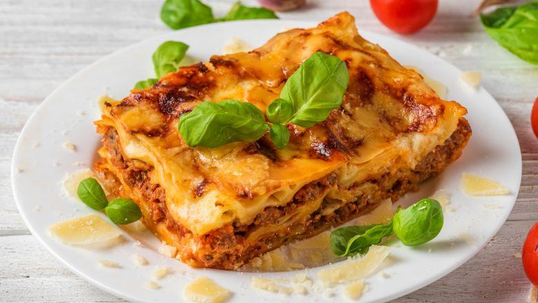

Lasagna
Lasagna is a type of pasta, possibly one of the oldest types, made of very wide, flat sheets.
Either term can also refer to an Italian dish made of stacked layers of lasagne alternating with fillings such as ragù (ground meats and tomato sauce), vegetables, cheeses (which may include ricotta, mozzarella, and parmesan), and seasonings and spices, like Italian seasoning, such as garlic, oregano and basil.
The dish may be topped with grated cheese, which becomes melted after baking. Typically cooked pasta is assembled with the other ingredients and then baked in an oven. The resulting casserole is cut into single-serving square portions.
Ingredients
- 16 ounces uncooked lasagna noodles
- 1 (26 ounces) can spaghetti sauce
- 1 pound cottage cheese
- 8 ounces shredded mozzarella cheese
- 8 ounces shredded Cheddar cheese
- 1 cup grated parmesan cheese
Steps
- Preheat oven to 375 degrees F (190 degrees C).
- Bring a large pot of lightly salted water to a boil. Add pasta and cook for 8 to 10 minutes or until al dente; drain.
- In a blender or with an electric mixer, blend tomato sauce and cottage cheese together until smooth. Spoon a little of the sauce mixture in the bottom of a 9x13 baking dish. Place a layer of cooked noodles over the sauce, and sprinkle a portion of the mozzarella, the cheddar and the parmesan over the noodles. Repeat layering of sauce, noodles and cheese; finish with a cheese layer.
- Bake in preheated oven 30 to 45 minutes, until cheese is bubbly and golden.
Return to top
Return to main page